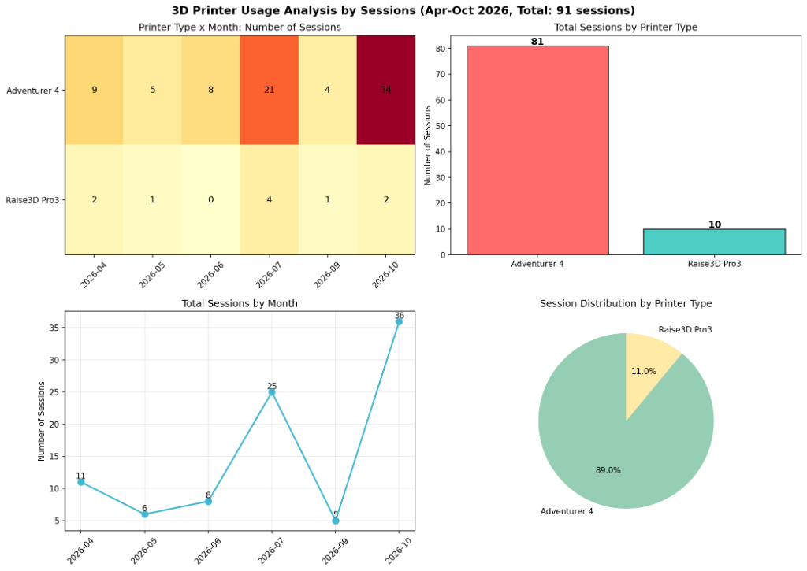

3Dプリンター利用実績データ分析（2026年4月～10月）
ものつくりラボに設置されている3Dプリンターを対象として、2026年4月から10月までの稼働状況を回数ベースで再集計しました。故障によるキャンセルデータを除外し、実際に造形が行われた有効セッションを分析しています。なお、３Dプリンター利用管理用のシステムを使わずに使用したものは含まれていません。
データ可視化グラフ

※ グラフ左上: 機種×月別セッション数 / 右上: 機種別合計 / 左下: 月別推移 / 右下: 機種別比率
プリンター種類と年月ごとの利用回数
| プリンター種類 | 4月 | 5月 | 6月 | 7月 | 9月 | 10月 | 合計 |
|---|---|---|---|---|---|---|---|
| Adventurer 4 | 9 | 5 | 8 | 21 | 4 | 34 | 81 |
| Raise3D Pro3 | 2 | 1 | 0 | 4 | 1 | 2 | 10 |
| 月別合計 | 11 | 6 | 8 | 25 | 5 | 36 | 91 |
※ 8月は夏期休業および長期休暇期間のため集計対象外となっています。
データから見られる傾向と考察
Adventurer 4 が全体の約89%を占める理由
全体の利用回数91回のうち、81回が Adventurer 4 で造形されています。取り回しの良さや立ち上がりの早さ、日常的な試作に適した扱いやすさが、学生の日常的な利用につながっていると考えられます。一方で大型造形や高機能材料に対応する Raise3D Pro3 は合計10回にとどまっており、用途に応じた使い分けがなされていることが伺えます。
7月と10月に訪れる2大ピーク
月別の利用推移を見ると、7月に25回、10月に36回の利用が集中しています。7月は夏休み前の学内コンテスト準備や前期末の制作課題が重なる時期です。また10月は高専祭の準備やコンテストの作品締切、卒業研究の試作が重なるため、年間を通して最も活発に利用される期間となっています。
まとめ
回数ベースでの分析結果から、手軽に扱えるプリンターへの需要が非常に高いこと、時期によって利用頻度の波が大きいことがわかりました。
ラボではピーク時の混雑緩和や、大型・特殊造形における Raise3D Pro3 の活用サポートにも力を入れています。造形サイズや材料の相談、スライサーソフトの設定など、疑問があれば気軽にスタッフやTAへご相談ください。